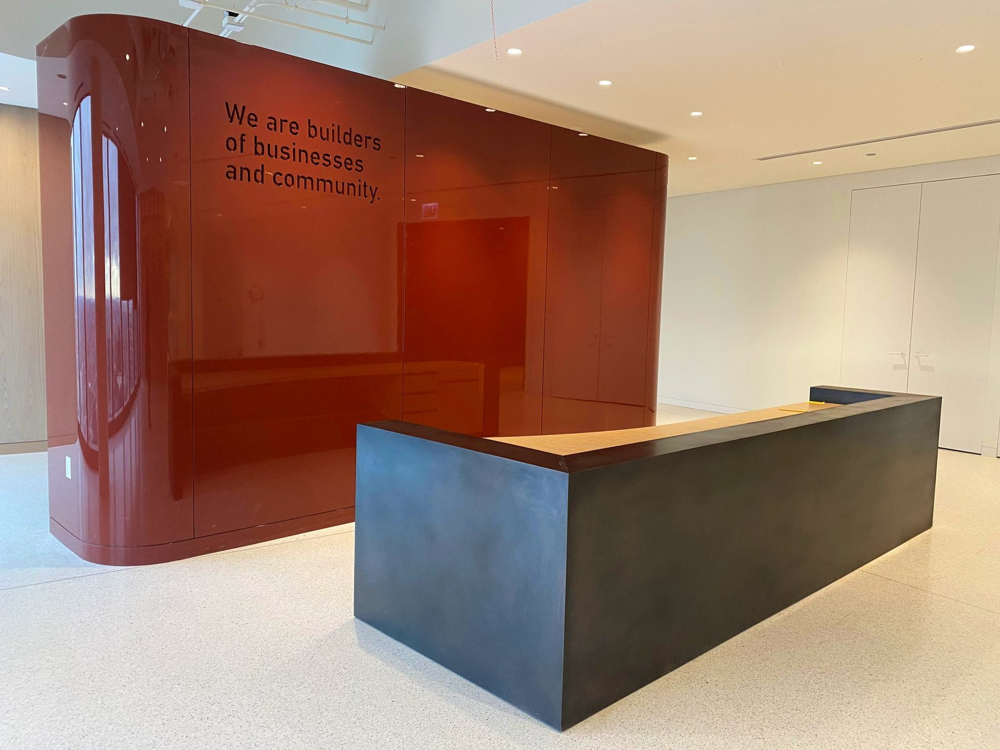
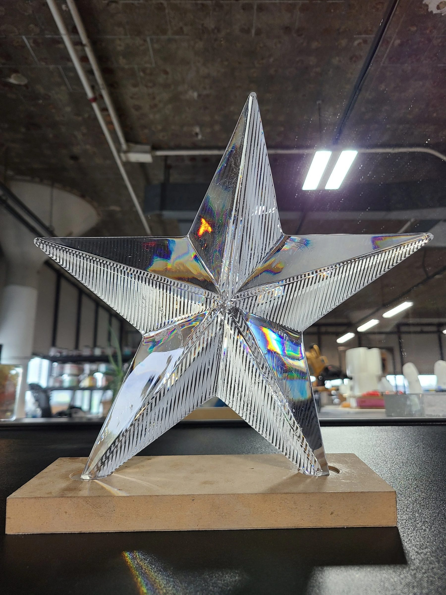
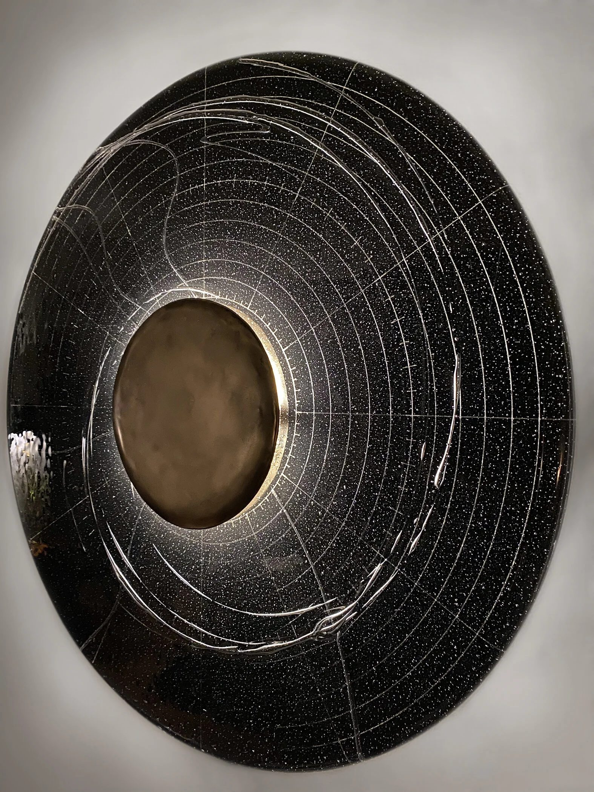
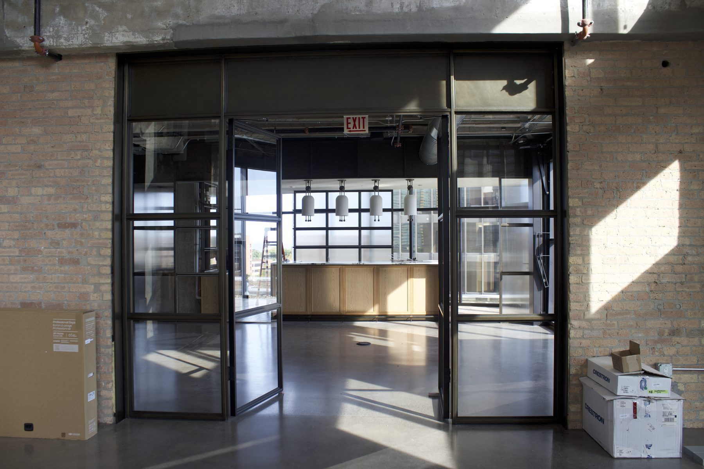
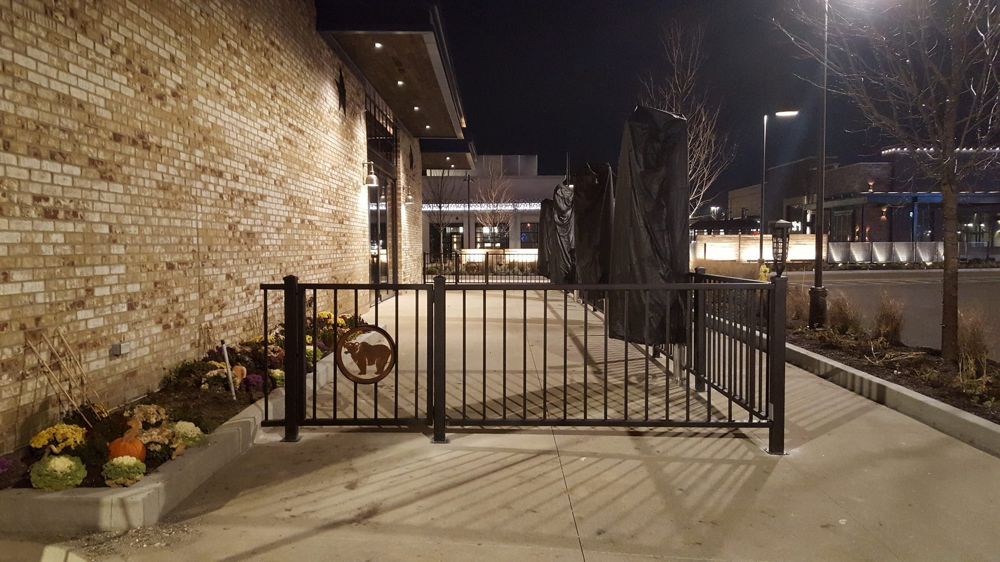
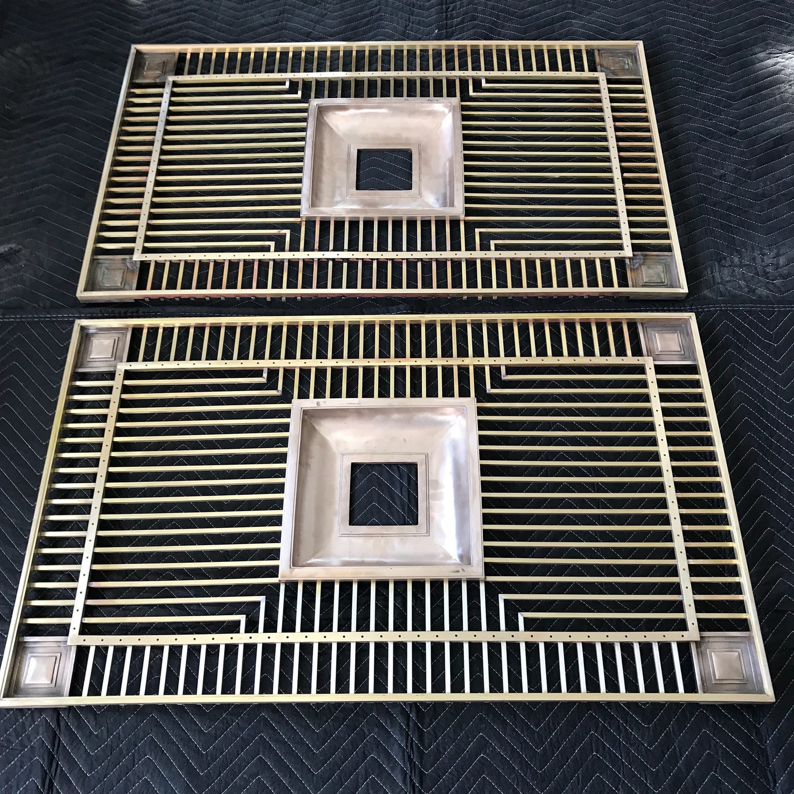
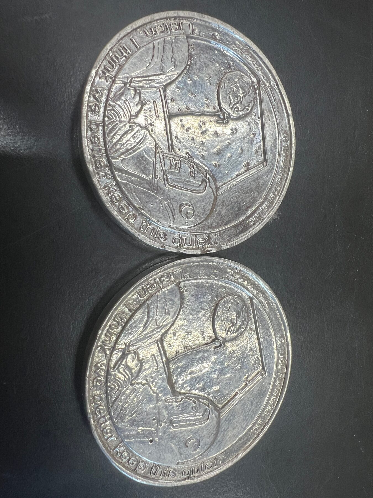
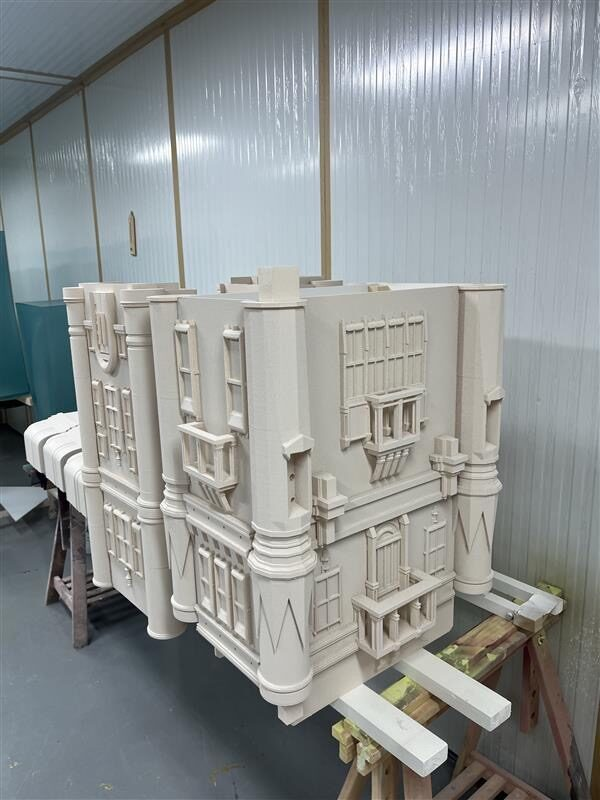
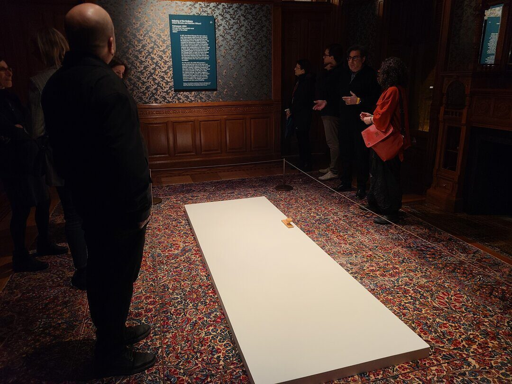

Index / 37 projects
Work
Note
Projects produced by ChiLab Studio and its directors, including earlier work from the studio's glass practice.
01a murmurationPublic ArtChicago, IL202302Grand Spiral StairArchitecturalChicago, IL202203Parametric Feature WallArchitecturalChicago, IL202104KNOLL Showroom MarqueeArchitecturalChicago, IL201905Glass CrossesGlassNew York, NY202206Icon StandsArchitecturalNew York, NY202207Illinois State Capitol HandrailsRestorationSpringfield, IL201808Flight of ButterfliesPublic ArtChicago, IL202409Tulips on The Magnificent MilePublic ArtChicago, IL202510SKIMS StorefrontsGlassMiami, Atlanta, Houston202411Jardin de GargolasPublic ArtChicago, IL202412HomeboundPublic ArtChicago, IL202313St. AlfredRetailChicago, IL202314Methodology TableFurniturePrivate client201615360 N Green ReceptionArchitecturalChicago, IL202416Pritzker Group Reception DeskArchitecturalChicago, IL202017Solid Cast Bronze Unfolding ChairFurnitureWANTED DESIGN, New York201318The Boolean Lamp and PendantLightingChicago, IL201419Architizer A+ AwardObjectsChicago, IL201520Cast Aluminum Tessellation WallArchitecturalChicago, IL201421Kuma's Corner West LoopRetailChicago, IL201822Jail DebrisGlassChicago, IL202323AppleGlassDriehaus Museum, Chicago202424Star AwardGlassChicago, IL202225Woven VesselsGlassChicago, IL202226Annular SconceLightingChicago, IL201927Litowitz Family OfficeArchitecturalEvanston, IL202428Kuma's Corner Vernon HillsRetailVernon Hills, IL201829Hobson Residence GrillesArchitecturalChicago, IL201830The ClockObjectsChicago, IL201531Far Side ISS CoinObjectsChicago, IL / International Space Station202632Tower Bridge at ScaleObjectsMilano, Italy202633Knoll Design CenterArchitecturalChicago, IL201934PalimpsestObjectsChicago, IL202435Colour Drop PedestalsObjectsChicago, IL201636Mayor's Office Cast GlassGlassChicago, ILArchive37Stained Glass for Kuma'sGlassChicago, IL2020

Public artwork, O'Hare Terminal 5

Uber Freight HQ, Old Post Office

Uber Freight HQ, Old Post Office

811 W Fulton Market

St. Nicholas Greek Orthodox Church, National Shrine
St. Nicholas Greek Orthodox Church, National Shrine

Office of the Architect of the Capitol

Peggy Notebaert Nature Museum

The Magnificent Mile Association

Cast glass window displays

YolloCalli Arts Reach

Leonard Suryajaya, E(art)h Chicago

Wicker Park storefront

Solid cast glass end table, ongoing since 2016

Sterling Bay

Bronze clad desk and credenza

One hundred pounds of solid bronze

Industrial design, product design

Award objects with Snarkitecture

Gary Lee Partners

Lighting, metalwork, furnishings

Maria Gaspar

Industry of the Ordinary

Cast lead crystal trophy

Candone Wharton

Fused glass and hammered bronze

LFO Management, 1616 Orrington

Hawthorn Mall, metalwork, signage and lighting

Cast and machined grilles in satin nickel

Rick Valicenti / Thirst

Small-edition silver coin for a Space Force mission

Additive manufacturing study for a Milano showroom

Fulton Market showroom rod screen

Industry of the Ordinary, Driehaus Museum

Christina Mackie, The Renaissance Society

Chicago civic glass object

Custom stained glass panels